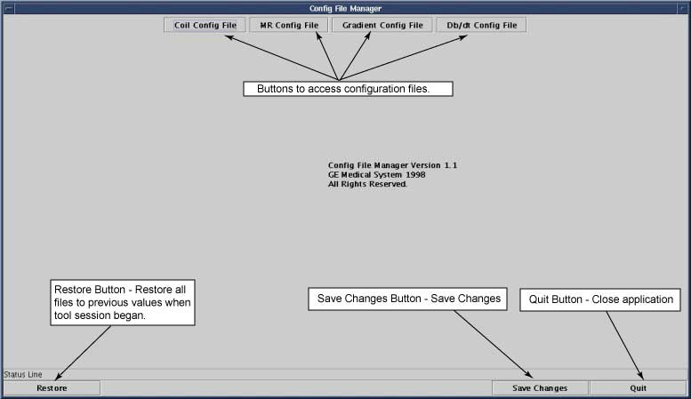

Operating Documentation
Direction 5440000, Rev# 5
Signa HDxt Service Methods
Module Version 1.0, Version Date 4/27/07
Operating Documentation |
The Configuration File Manager is a graphical interface used to change the contents of the Coil Configuration File, MR Configuration File, Gradient Configuration Files (there are two for TwinSpeed), and the SAR Configuration File. The Configuration files customize the software to the present hardware configuration. (In this text, configuration appears as config.) It also contains pre-configured parameters for all GE coils, so adding a coil is as simple as “click to add!”
To start the Configuration File Manager, go to the Service Desktop and start the Service Desktop Browser if it's not already running. Continue by following the steps shown in Illustration 1 to start Configuration File Manager.
Illustration 1: Starting the Config File Manager

See Illustration for a description the Configuration File Manager mains Screen.
Illustration 2: Config File Manager Main Screen (Typical)

Information of components of Configuration File Manager are accessed in .